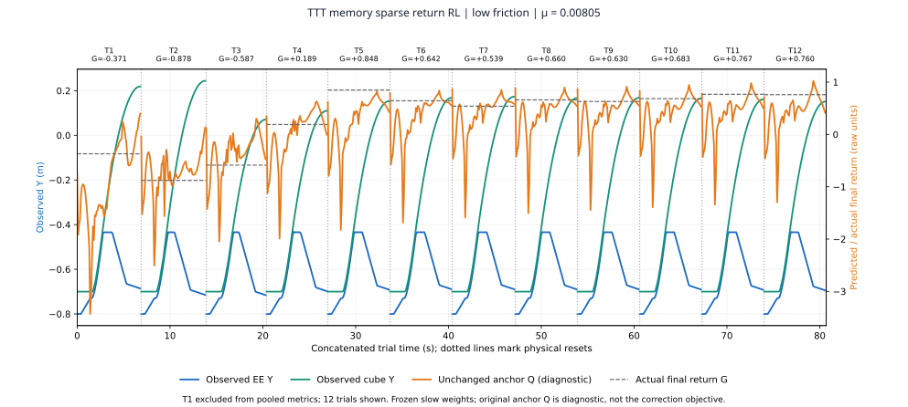
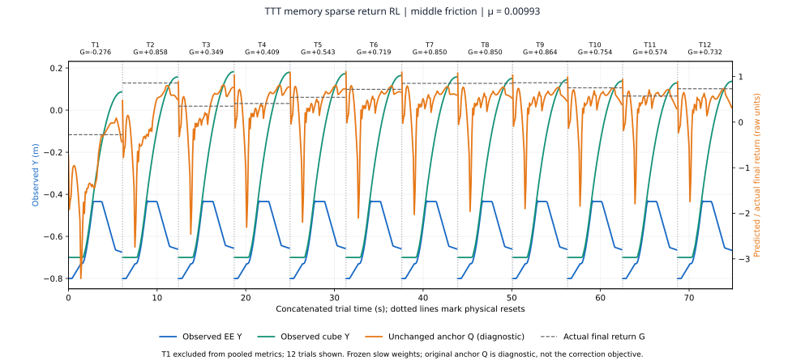
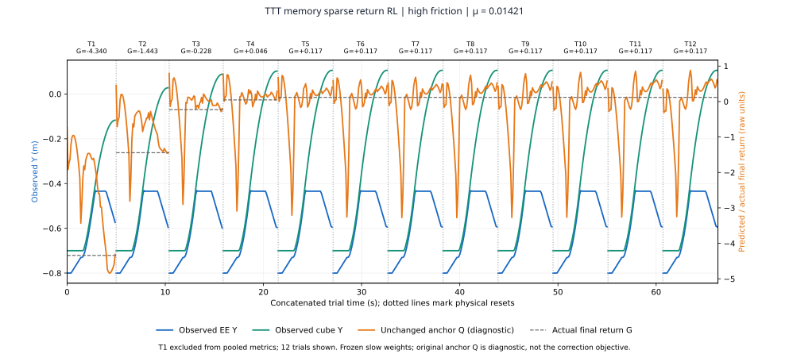

Selected projects
Memory-based robot learning
& radar perception.
Two research questions: how can an agent adapt from experience, and how can sensors learn useful representations?
01 / Robot learning · Current focus
Learning from repeated attempts
Task-private memory for dynamics adaptation, trained with sparse terminal returns.
Explore memory-based RL ↘02 / Radar perceptionLearning across sensing modalities
Cross-modal JEPA representations for radar–IMU gesture recognition.
Explore the JEPA architecture ↘01 / Robot learning · Current focus
TTT memory sparse return RL
A memory-based reinforcement-learning policy for GMP’s T4 iterative pushing task.
Problem
How can a robot learn from a failed attempt?
Hidden friction changes how far the cube travels. A useful policy must explore, retain what happened, and adjust its next attempt without retraining its global network weights.
The robot retains observed interaction history across repeated attempts and updates task-private fast memory to adapt its control. Sparse terminal returns train the value objective; a joint prediction/value objective shapes the shared memory used for control.
Inside the policy
Memory turns interaction into control context
The policy retains interaction history and an adaptive dynamics memory across attempts. The controller resets between trials; memory resets when a new task begins.
ID and OOD performance
TTT memory RL, trials 2–12. ID: reused 30-task benchmark, 12 trials per task. OOD: 32 matched tasks, 16 per friction band. These are separate evaluation sets; ID is within the training friction range [0.005, 0.015].
Adapting in the first few attempts
On the ID benchmark, success rises from 16.7% in trial 1 to 73.3% in trial 2 and 93.3% in trial 4. The memory-based policy learns from earlier mistakes while global model weights remain fixed during evaluation.
The original GMP T4 benchmark gives six attempts and defines episode success as succeeding in all of the last three. Here we report every trial to examine how early adaptation appears. A matched ID comparison of time to success is needed to establish faster adaptation than GMP.
Matched out-of-distribution evaluation
Official GMP: 0% OOD success
With learned memory retained, the official pretrained GMP policy recorded 0 successes in 352 primary trials. The TTT memory RL policy recorded 85 / 352 (24.15%).
| Policy | Low-friction OOD | High-friction OOD |
|---|---|---|
| TTT memory sparse return RL | 10.80% · 19 / 176 | 37.50% · 66 / 176 |
| Official GMP policy + memory | 0% · 0 / 176 | 0% · 0 / 176 |
32 matched tasks · 16 per friction band · trials 2–12. This is a custom benchmark extension; the residual RL controller and GMP use different action interfaces. The comparison supports the result on this evaluation.
Adaptation retained across trials
The TTT memory RL policy is shown. Blue: end-effector Y; green: cube Y; orange: anchor critic diagnostic; gray: native terminal return. Selected successful examples from the ID benchmark, one per friction band. All 12 attempts are shown; aggregate results above include every evaluated task. Returns can fluctuate even when success is retained.



Policy in action
TTT memory sparse return RL
Low OOD friction · μ = 0.0025 · All 12 trials
TTT memory sparse return RL
High OOD friction · μ = 0.0225 · All 12 trials
Saved-command replays of fixed OOD boundary tasks. All shown attempts fail at these extremes; they illustrate failure behavior, while the aggregate rates above cover all tasks.
02 / Radar perception
Cross-modal JEPA for radar gesture recognition
Learn the landmark structure that radar can predict, rather than regress directly to noisy coordinate targets.
Problem
Lossy radar makes raw landmark targets ambiguous
Radar cannot observe every detail captured by hand landmarks. Directly regressing to landmark coordinates therefore penalizes the model for details that may be unpredictable from its sensor input, creating noisy learning targets.
Core idea
Learn a target representation that the sensors can predict
Inverse landmark-to-sensor prediction trains the landmark encoder to capture structure shared with radar and IMU. The sensor encoder then predicts this learned landmark representation. The aim is to reduce target noise from details the sensors cannot recover.
The role of SIGReg
SIGReg regularizes both learned representations to encourage diverse, non-collapsed features that can support downstream gesture classification. After pretraining, the sensor encoder is frozen and a temporal classifier learns to recognize gestures from radar–IMU sequences.
Model architecture
Learning a target the sensors can predict
Inverse landmark-to-sensor prediction shapes the landmark representation. Forward prediction aligns sensor features with that learned target; SIGReg encourages useful, non-collapsed representations.
At inference, only radar and IMU are needed. A temporal classifier reads the frozen sensor features to predict the gesture.
Scroll horizontally to view the full diagram.
128Dsensor token per frame
30 framesper gesture sequence
Radar + IMUdeployment inputs
8 classesgesture prediction
Held-out evaluation
86.73% gesture accuracy
The frozen JEPA representation supports stronger recognition than the radar-only supervised baseline in this local comparison.
| Method | Unseen-evaluation accuracy |
|---|---|
| Cross-modal JEPA + frozen temporal classifier | 86.73% |
| Supervised radar-only CNN + Transformer | 71.28% |
| Original method · local reproduction | 62.27% |
Official non-OOD episode split; approximately 4,150 training and 1,050 evaluation episodes across eight gestures. Checkpoints are selected with source validation. These figures come from the local experiment report and are distinct from the upstream paper’s reported result.
Built on the EgoHand / mmVR sensing environment and dataset.